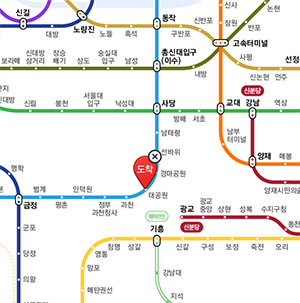

Home > 서울랜드 소개 > 오시는길
오시는길
서울랜드 주소 경기도 과천시 막계동 광명로 181
지하철 이용시
지하철 4호선 대공원역 2번 출구 이용
 N 지하철 노선도 보기시외교통 이용시
- 서울역
- 지하철 4호선 (서울역) 출발 > 지하철 4호선 (대공원/서울랜드역) 하차 2번 출구
- 용산역
- 지하철 중앙선 (용산역) 출발 > 지하철 중앙선 (이촌역) > 지하철 4호선
환승 >
지하철 4호선 (대공원/서울랜드역) 하차 2번 출구
- 영등포역
- 지하철 1호선(영등포역) 출발 > 지하철 1호선 (서울역) > 지하철 4호선
환승 >
지하철 4호선 (대공원/서울랜드역) 하차 2번 출구
- 청량리역
- 지하철 중앙선 (청량리역) 출발 > 지하철 중앙선 (이촌역) > 지하철 4호선
환승 >
지하철 4호선 (대공원/서울랜드역) 하차 2번 출구
- 수원역
- 지하철 1호선 (수원역) 출발 > 지하철 1호선 (금정역) > 지하철 4호선 환승
>
지하철 4호선 (대공원/서울랜드역) 하차 2번 출구
주차 안내
| 서울랜드 테마파크 이용시 | |
|---|---|
| 당일 이용권, 영수증 | 무료 |
| 동물원, 미술관, 스카이리프트 | 해당없음 |
| 일반 요금 | |
|---|---|
| 소형 | 10,000원 |
| 대형 | 30,000원 |
- 주차 편의 시설 안내
- 서울랜드, 국립현대 미술관 진입로를 따라 올라오시면 서울랜드 동문 주차장이 있습니다.
- 서울랜드 주차요금은 후불이며, 서울랜드에서 사용하신 당일 이용권 또는 영수증을 출차 시 주차요원에게 보여주시면 주차료는 무료입니다.
- 주차장 폐장시간은 당일 공원 폐장 후 30분까지입니다.
- 현장 상황에 따라 동문 주차장은 조기 만차되거나 이용 제한될 수 있음을 양지 바랍니다.
- 동문 주차장 만차 시에는 가까운 외부 유료 주차장으로 안내드리며 주차비는 환불되지 않습니다.
(연간이용손님도 동일하게 적용됨을 참고 부탁드립니다.)